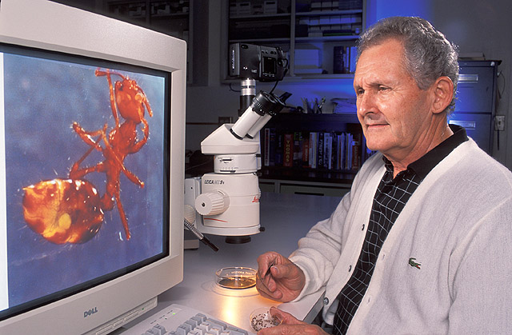

(лат. Formicidae) — семейство насекомых из надсемейства муравьиных, отряда перепончатокрылых. Являются общественными насекомыми, образующими 3 касты: самки, самцы и рабочие особи. Самки и самцы крылатые, рабочие особи — бескрылые. Усики коленчатые, у самок и рабочих особей 11—12-члениковые, у самцов 12—13-члениковые, у ряда видов 4-, 6- или 10-члениковые. Основной членик усика (скапус) обычно намного длиннее всех остальных. Задний отдел груди (эпинотум) представляет собой первый сегмент брюшка, слившийся с заднегрудью. Собственно, брюшко присоединяется к эпинотуму стебельком, образованным первым или вторым сегментами. У муравьёв некоторых подсемейств (мирмицины, понерины и других) имеется развитое жало. Крылья с редуцированным жилкованием. Муравьи живут семьями в гнёздах, называемых муравейниками, которые устраивают в почве, древесине, под камнями; некоторые сооружают муравейники из мелких растительных частиц и т. п. Существуют паразитические виды, которые обитают в гнёздах других муравьёв, муравьи-«рабовладельцы», содержащие в своих гнёздах «рабов» — муравьёв других видов. Ряд видов приспособился к обитанию в жилищах человека. Некоторые виды ценятся за регулирование численности насекомых-вредителей, другие сами могут считаться вредителями.
Питаются преимущественно соком растений, падью тлей и других сосущих насекомых, в период кормления личинок — преимущественно насекомыми. Есть также виды, питающиеся семенами (муравьи-жнецы) и культивируемыми грибами (муравьи-листорезы).
Распространены по всему миру, за исключением Антарктиды и некоторых удалённых островов, образуя 10—25 % земной биомассы наземных животных. Общая численность всех муравьёв на Земле составляет примерно 20 квадриллионов особей. Успех муравьёв во многих средах обитания обусловлен их социальной организацией и способностью изменять место обитания и использовать разнообразные ресурсы. В мире известно более 14 000 современных видов и 345 родов, а также ископаемых 166 родов и более 760 видов муравьёв, распространённых преимущественно в тропиках. В Палеарктике около 1350 видов из 94 родов, в России отмечено более 260 видов из 44 родов. Муравьи — это почти 2 % от всего видового многообразия животного мира и до 80 % биомассы насекомых (около 20 % биомассы всех животных). По оценкам биологов в мире обитает около 20 квадриллионов муравьёв (20 × 1015) муравьёв с общей биомассой в 12 мегатонн сухого углерода. Это превышает совокупную биомассу диких птиц и млекопитающих и составляет 20 % биомассы человека. Численность муравьёв распределяется на Земле неравномерно, достигая максимума в тропиках и в шесть раз различаясь по местам обитания. В лесах умеренного пояса и тропических лесах муравьи обеспечивают перемещение и аэрацию грунта. Многие земляные виды муравьёв являются почвообразователями, рыхлящими, перемешивающими, удобряющими почву. Их почвообразующая деятельность заключается в перемешивании почвы, изменении её механического и химического состава. В дождевых тропических лесах 99,9 % питательных веществ оставалось бы в верхнем слое почвы, если бы не переносилось вглубь, в том числе и муравьями. Муравьи вместе с термитами могут увеличивать урожайность в регионах с сухим и жарким климатом, где отсутствуют дождевые черви. В экспериментальных условиях в Австралии они увеличивают урожай пшеницы на 36 %.
Многие муравьи также представляют собой важные звенья в пищевых цепях как хищники, питающиеся беспозвоночными. Муравьи, поселяющиеся в древесине или устраивающие свои гнёзда в старых пнях, принимают участие в механическом разрушении мёртвой древесины, ускоряя процессы её разложения. Муравьи, питающиеся семенами, непосредственно способствуют расселению многих видов растений. Семена некоторых растений (так называемых мирмекохорных растений) расселяются только муравьями (копытень, фиалки, пролесок и другими). В степях и пустынных районах семена многих растений разносятся исключительно муравьями. Муравьи — единственные насекомые, которые рассеивают семена в больших количествах, на всех континентах и практически во всех экосистемах. Всего в мире насчитывается около 3000 видов мирмекохорных растений (около 1 % флоры), а в Европе более 275 таких видов Способность муравьёв эффективно использовать ресурсы нередко приводит к их конфликту с людьми, так как муравьи могут повреждать культурные растения (например, разводя на них тлей) или вторгаться в жилища человека.
Значение муравьёв в природе велико, однако некоторые виды питаются растениями, плодами и ягодами, наносят вред сельскому хозяйству, и считаются вредителями. В тропических странах плантациям могут вредить муравьи-листорезы.
Муравьи могут забираться в жилые и хозяйственные помещения, квартиры, где портят сладкие и мясные продукты. Также они могут иногда заползать в ульи и вредить пчеловодству. В плодовых садах они часто являются спутниками других вредителей — тлей, медяниц, червецов, цикад, выделяющих большие количества пади.
Таким образом, ряд видов могут считаться вредителями сельского и лесного хозяйства, а также бытовыми вредителями.
Из-за высокой приспособляемости муравьиных семей ликвидировать всю популяцию практически невозможно. В связи с этим управление численностью муравьёв-вредителей — это вопрос контроля местных популяций, а не уничтожения всех семей, и большинство попыток контроля являются временными решениями.
Среди муравьёв к вредителям причисляют дерновых муравьёв, жёлтых сумасшедших муравьёв, фараоновых муравьёв, муравьёв-древоточцев, в частности, Camponotus consobrinus, аргентинских муравьёв, мирмик. Приманки собираются муравьями как продовольствие и доставляются в гнездо, где яд распространяется на других членов семьи через обмен пищей. Борная кислота и боракс часто применяются как инсектициды.
И муравьи продолжают развиватся очень быстро. А ученые узнают все новые и новые виды муравьев изучают этих муравьев и их строение. 